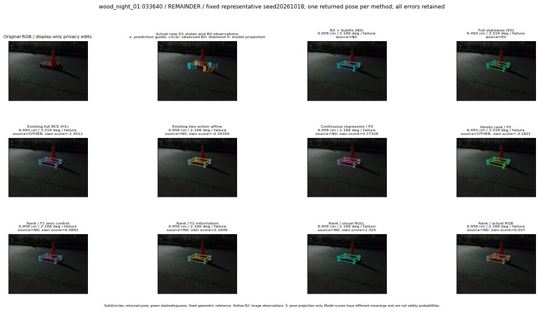

실선은 반환 자세, 초록 점선은 고정 기하 참조입니다. S는 영상 관측이 아닙니다. 점수는 모델별 의미가 다르며 보정된 안전 확률이 아닙니다. 개인정보 처리는 표시 사본에만 적용했습니다.
| 방법·seed | 위치 / 회전 / 공동성공 | 실제 출처 | 선택 후보 | 각 모델 자체 점수 |
|---|---|---|---|---|
| N0 | 6.958 cm / 2.166 deg / failure | N0 | N/A | N/A |
| E0 | 6.493 cm / 3.319 deg / failure | E0 | N/A | N/A |
| E0_REGENERATED | 6.493 cm / 3.319 deg / failure | E0 | E0_REGENERATED | N/A |
| POSEFIX_SUBPIX_PF_ANCHOR | 8.233 cm / 5.051 deg / failure | OTHER | N/A | N/A |
| POSEFIX_SUBPIX_YOLO_ANCHOR | 8.244 cm / 4.811 deg / failure | OTHER | N/A | N/A |
| D1_H1_MLP_s20261018 | 6.493 cm / 3.319 deg / failure | OTHER | G10/ORIGINAL_WD/endpoint/5 | -1.4510869979858398 |
| D1_H1_MLP_s20261019 | 6.493 cm / 3.319 deg / failure | OTHER | G10/ORIGINAL_WD/endpoint/5 | -1.6705946922302246 |
| D1_H1_MLP_s20261020 | 6.493 cm / 3.319 deg / failure | OTHER | G10/ORIGINAL_WD/endpoint/5 | -1.6800254583358765 |
| D1_H1_PAIR_MLP_s20261018 | 6.958 cm / 2.166 deg / failure | N0 | N0 | -0.9912563562393188 |
| D1_H1_PAIR_MLP_s20261019 | 6.958 cm / 2.166 deg / failure | N0 | N0 | -1.3012478351593018 |
| D1_H1_PAIR_MLP_s20261020 | 6.958 cm / 2.166 deg / failure | N0 | N0 | -1.3520838022232056 |
| D1_H1_PAIR_ROLE_AFFINE_s20261018 | 6.958 cm / 2.166 deg / failure | N0 | N0 | -0.34354451298713684 |
| D1_H1_PAIR_ROLE_AFFINE_s20261019 | 6.958 cm / 2.166 deg / failure | N0 | N0 | -0.524734616279602 |
| D1_H1_PAIR_ROLE_AFFINE_s20261020 | 6.958 cm / 2.166 deg / failure | N0 | N0 | -0.30611762404441833 |
| R_CONT_F0_s20261018 | 6.958 cm / 2.166 deg / failure | N0 | N0 | 0.7732775211334229 |
| R_CONT_F0_s20261019 | 6.493 cm / 3.319 deg / failure | OTHER | G10/ORIGINAL_WD/endpoint/5 | 0.8839423656463623 |
| R_CONT_F0_s20261020 | 6.958 cm / 2.166 deg / failure | N0 | N0 | 0.8800969123840332 |
| R_ORDER_F0_s20261018 | 6.493 cm / 3.319 deg / failure | OTHER | G10/ORIGINAL_WD/endpoint/5 | -3.182116985321045 |
| R_ORDER_F0_s20261019 | 6.958 cm / 2.166 deg / failure | N0 | N0 | -3.031888484954834 |
| R_ORDER_F0_s20261020 | 6.958 cm / 2.166 deg / failure | N0 | N0 | -1.893715500831604 |
| R_ORDER_F1_ZERO_s20261018 | 6.958 cm / 2.166 deg / failure | N0 | N0 | 6.489224433898926 |
| R_ORDER_F1_ZERO_s20261019 | 6.493 cm / 3.319 deg / failure | OTHER | G10/ORIGINAL_WD/endpoint/5 | -2.623760938644409 |
| R_ORDER_F1_ZERO_s20261020 | 6.958 cm / 2.166 deg / failure | N0 | N0 | 1.8595207929611206 |
| R_ORDER_F1_s20261018 | 6.958 cm / 2.166 deg / failure | N0 | N0 | 2.1645827293395996 |
| R_ORDER_F1_s20261019 | 6.958 cm / 2.166 deg / failure | N0 | N0 | 4.432019233703613 |
| R_ORDER_F1_s20261020 | 6.958 cm / 2.166 deg / failure | N0 | N0 | 4.296336650848389 |
| V_ORDER_NULL_s20261018 | 6.958 cm / 2.166 deg / failure | N0 | N0 | 1.3250341415405273 |
| V_ORDER_NULL_s20261019 | 6.958 cm / 2.166 deg / failure | N0 | N0 | 1.2453739643096924 |
| V_ORDER_NULL_s20261020 | 6.958 cm / 2.166 deg / failure | N0 | N0 | 1.9202739000320435 |
| V_ORDER_RGB_s20261018 | 6.958 cm / 2.166 deg / failure | N0 | N0 | 6.037019729614258 |
| V_ORDER_RGB_s20261019 | 6.958 cm / 2.166 deg / failure | N0 | N0 | 0.7648881673812866 |
| V_ORDER_RGB_s20261020 | 6.958 cm / 2.166 deg / failure | N0 | N0 | -6.45756721496582 |